Leviatã novo · rodada 5
Bloco D · 19/10/2026. ← rodada 4 · O nado do menu: aprovado (volta a ser visto no bloco E).
Capítulo 5 · ele não cai duro no jogo, para você avaliar
A sua ideia: explosão + as partículas, e depois o quadro dele já caído. O corte para o plano baixo e os 2 quadros de impacto ficaram como você aprovou.

aprovado Você aprovou a cena, o núcleo e a dorsal +4 rasgada ("concordo com todas as suas escolhas, a animação e a explosão de chegada ficou muito boa").
ajuste novo, no GIF acima A explosão vem ~70 ms ANTES do contato, com o focinho ainda a ~35 px do chão, como um meteoro que estoura antes de tocar. As duas silhuetas mostram o corpo ainda no ar, com o clarão nascendo embaixo dele, e o encosto acontece dentro da bola de fogo.
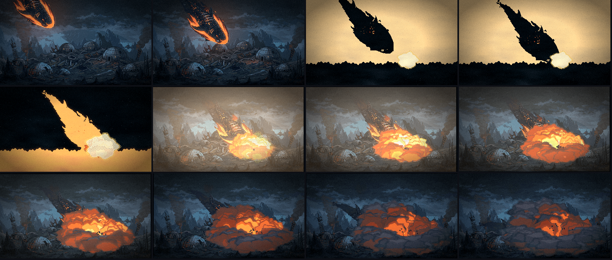
- O clarão. Depois dos 2 quadros de impacto, a tela acende e apaga em 0,28 s.
- O corpo desaba. O focinho bateu e o resto vem junto: o rabo cai para o chão, girando em volta do focinho, enquanto a bola de fogo cresce. Um segundo tremor quando o rabo bate. Depois ele esmaece dentro da onda de poeira.
- A explosão (folha nova, assada em pixel, tela cheia, 48 quadros): a bola de fogo, a onda de poeira rasteira que corre pelo chão para os dois lados, a nuvem de detritos sobre o dorso e a coluna que sobe. As bolas têm sombra embaixo e se desfazem em pontilhado, sem transparência.
- Ele já está deitado. Enquanto a fumaça cobre 80–96% da carcaça (medido quadro a quadro), o quadro do capítulo 6 aparece por baixo. Quando ela baixa, a carcaça está deitada no meio da colônia, com a lava acesa e o fogo nas cúpulas.
- Os grãos da cortina de ejeção foram para trás da fumaça: por cima dela, liam como chiado branco.
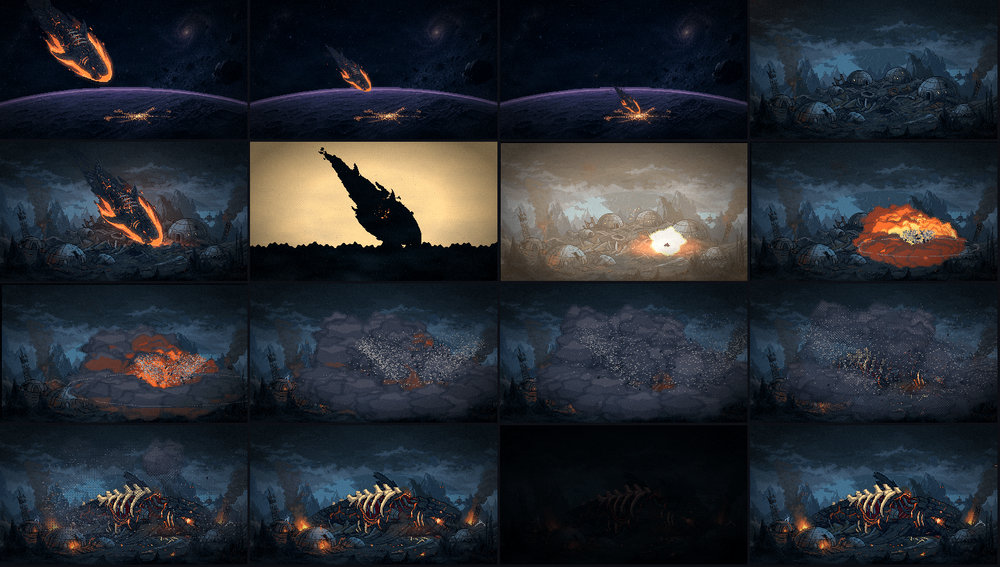
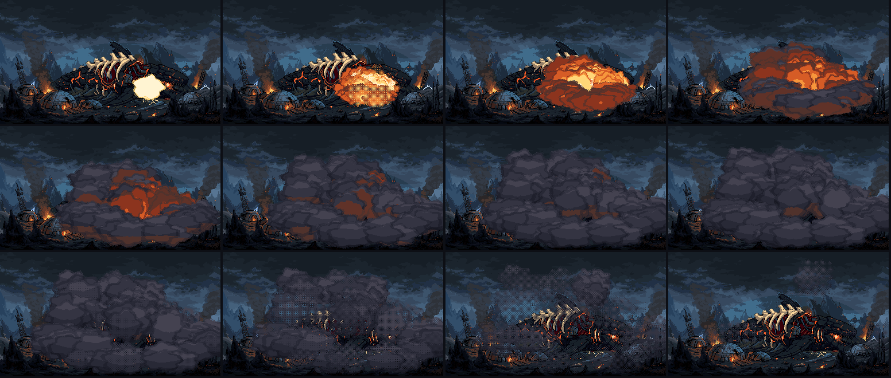
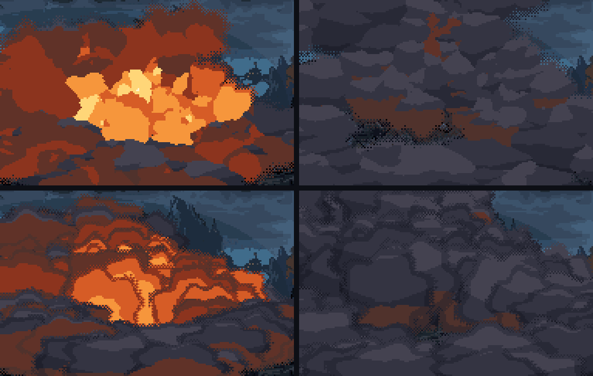
explosao/.Capítulo 5 · a colônia vista de órbita escolha uma
O prédio de 44 px saiu. A colônia agora são as luzes da noite dela, em pixel de 1 px, achatadas pelo ângulo baixo como as crateras em volta, somadas ao chão. No fim da queda a rede falha: pedaços da cidade piscam e apagam, cada vez mais.
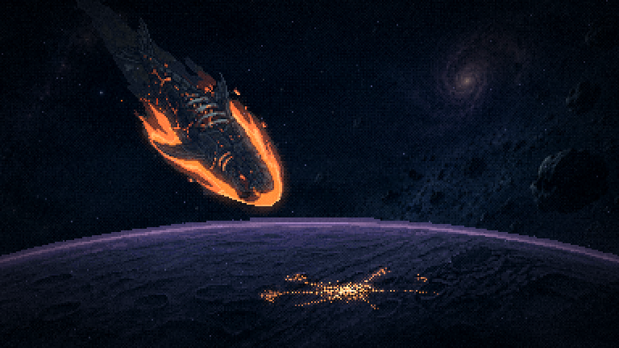
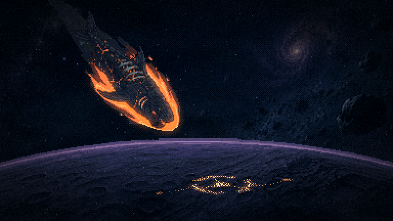
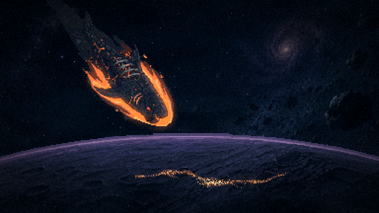
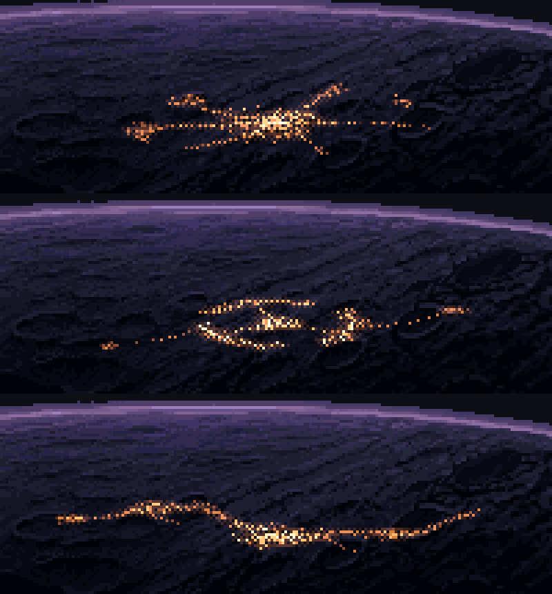
Capítulos 6 e 7 · a dorsal mais baixa escolha a altura
Descendo, a base da barbatana entra mais atrás das costelas e a ponta perto da cabeça deixa de parecer solta. A carcaça nova já está instalada com a +4 rasgada (a minha aposta), porque o capítulo 5 agora termina nela. Trocar de altura é rodar a instalação de novo.
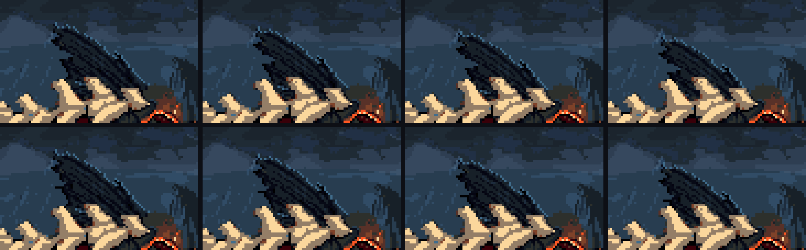
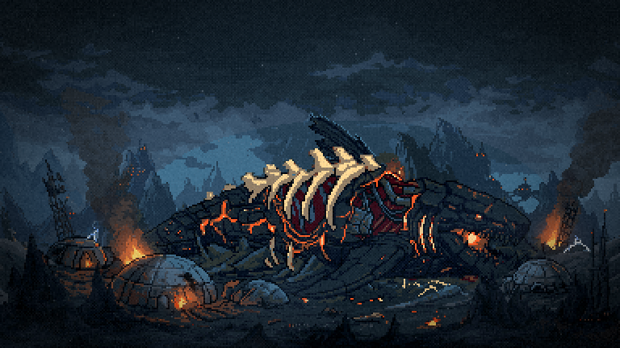

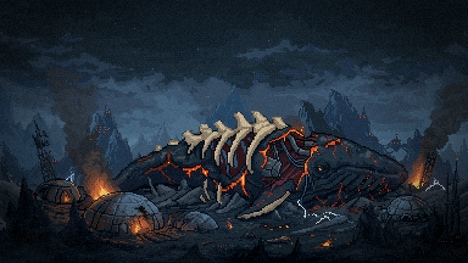
assets/raw/f8-sobrevoo*-original.png.consertado no caminho A instalação da carcaça recebe a pintura por argumento e tem uma lista do que é da COLÔNIA dentro da área do bicho: o fogo da cúpula da direita e um entulho cor de ferrugem não apagam mais junto com a lava no capítulo 7. E o miolo branco do olho, que ficava aceso no quadro frio depois da última luz, agora apaga com ela.